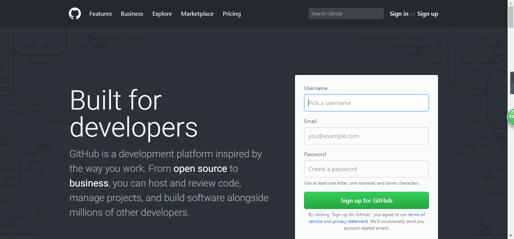
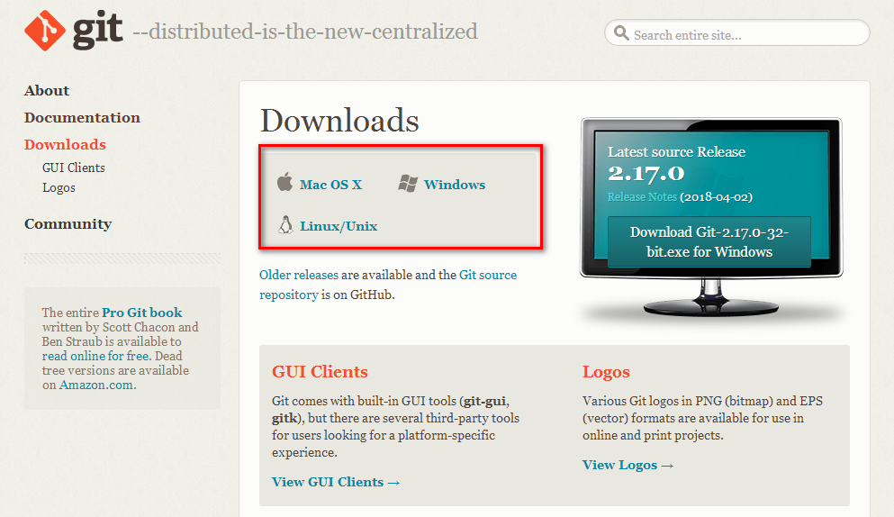
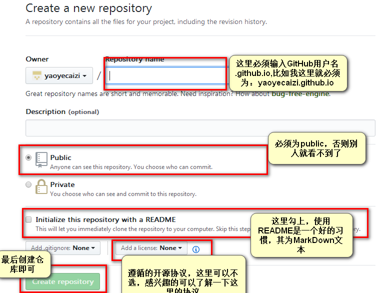
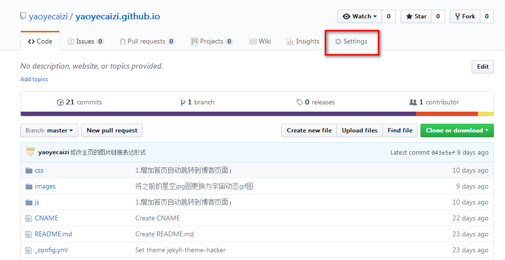
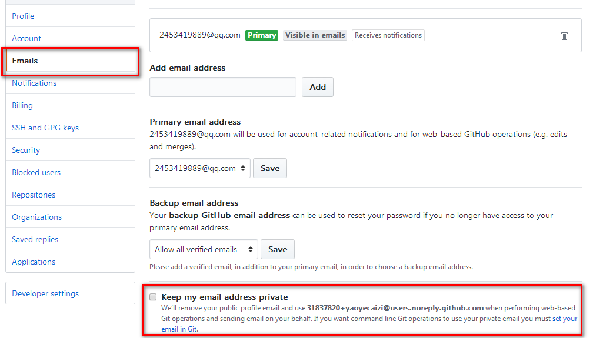
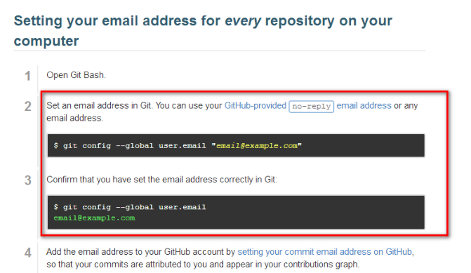
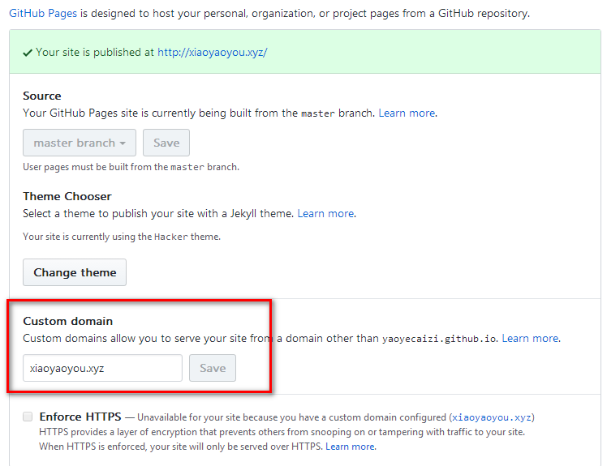

借助GitHub pages搭建静态个人网站并绑定域名
一、简介
最近学习了一部分网页开发相关的知识，所以想要来实践一下学到的知识，毕竟实践才是检验真理的唯一标准。于是，我就想通过系统性的制作一个个人网站来实践我所学到的东西，但是要搭建一个网站需要主机、域名等等一系列的东西，而我仅仅只是为了学习以及实践，显然没有必要付出那么高的成本，在一番搜索与计划之后，一个整体的想法就形成了：利用GitHub pages搭建个人静态网站，然后写一些博客，这些博客一方面可以总结我学到的一些知识，另一方面可以实践或者说实验我学到的网页知识。而且一旦自己有能力购买虚拟主机，这些静态页面也完全可以结合后台来使用，这样也可以让我对预留后台接口有更多的思考与实践。
二、准备
1.注册GitHub账号
进入GitHub官网：https://github.com/
如下图所示，输入用户名、邮箱、密码进行注册：

然后在第二步中选择free，即免费，如下图所示：

然后在邮箱验证即可。
2.安装好Git
下载安装Git：https://git-scm.com/downloads
如下图所示，选择相关系统进行Git下载：

然后像安装普通软件一样安装Git即可。关于Git的使用，这里不再赘述，我们这里的重点不是这个，而且如何使用Git也不是三言两语能说清的，必须你自己去详细了解如何使用Git，至少懂得Git的基本用法。
3.购买域名（非必选）
当我们使用GitHub pages创建好个人网站后，GitHub pages会有一个基于你的GitHub用户名的域名，但是这个域名可能不是你想要的，这个时候你就需要付费去买一个域名了，购买好后再将其和你创建好的GitHub pages绑定即可。一个简单的域名，一般第一年收费只有几块十块钱。
三、创建、设置GitHub pages并绑定域名
1.创建仓库
登录上你的GitHub后，我们来创建一个仓库：https://github.com/new，我们的静态网站就讲会放在这里，这里需要注意的一点是：当我们利用GitHub pages创建个人静态网站的时候，仓库的名字只能是“你的GitHub用户名.github.io”，而且这个仓库只能有一个。
如下图所示，是创建过程：

2.设置仓库
创建后进行你新建的仓库，然后选择settings，进行仓库设置，如下图所示：

在这里，你可以设置你的网站模板，也可以绑定你的域名，我们可以先选择一个模板，保存设置然后输入你的域名验证一下是否创建完成了。
这里需要注意的一点是，设置时不能进行enforce HTTPS设置，否则在进行远程克隆以及推送时会出现错误。
3.进行网站开发
到上一步，我们已经使用GitHub pages创建出来一个网站首页了，接下来就是利用Git将该仓库代码clone到本地，然后进行静态网站开发，开发完毕后再推送到远程即可。
在clone过程中如果出现：SSL certificate problem: self signed certificate，是由于域名缺少ssl证书的原因，这里，我们取消ssl证书验证即可，在Git命令行输入：
set GIT_SSL_NO_VERIFY=true git clone
当我们在本地开发完网站后，需要远程推送到GitHub，但是推送时需要输入用户名密码以及邮箱，如果你绑定的邮箱设置为私有，这里就会报错，我们需要另外设置一个邮箱或者将该邮箱取消私有，在用户设置中找到email选项，取消勾选：

在本地Git命令行中设置绑定的邮箱：

4.域名绑定（非必须）
购买域名，选择域名服务，找到你绑定的域名后选择解析，然后进行修改，记录类型选择A，主机记录我们输入@即可（即为空）,记录值输入我们GitHub pages给你分配的固定IP（ping一下你的域名就可以看到你的IP地址），解析路线默认即可，TTL10分钟即可，然后启用。
然后在之前所说的仓库设置中，找到Custom domain，输入你购买并解析的域名，然后保存即可：

域名的解析及绑定需要一定的时间，不是立刻生效的，而且在天朝域名不进行实名认证可能还存在不能使用的问题，这个过程慢的话可能需要一到两天。。。
四、最后
GitHub是会不断更新的，所以我上面所说的可能随着版本的不同位置会发生变化，但是总体思路是不变的。利用GitHub pages进行个人静态网站搭建，这些过程在GitHub上有使用说明，参照其说明进行静态网站搭建，遇到问题解决问题即可。